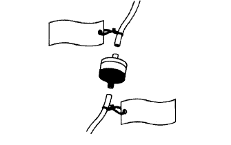

作業の心得
| 1 | 身だしなみ |
|
| 2 | 車両の保護 |
|
| 3 | 安全作業 |
|
| 4 | 工具および計器などの準備 |
|
| 5 | 脱着·分解·組み付け作業 |
|
| 6 | 取りはずし部品 |
|
| 7* | 作業完了後の確認 |
|
- ■ 警 告 ■
- *:作業完了後の確認を怠ると、重大災害を引き起こす可能性があるので、確実に実施すること。
 |
プレコートボルト
プレコートボルトとは、ねじ部にシールロック剤が塗布されているボルトである。
プレコートボルトを再度締め付けたり、緩めたり、または動かす場合は、指定の接着剤を使用して、プレコートする。
- ■ 注 意 ■
- トルクチェックは、締め付けトルク許容範囲の下限の値で行う。
プレコート部品を再利用する場合は、ボルトおよびねじ穴の古い接着剤を取り除き、ホワイトガソリンなどで脱脂、圧縮エアで乾燥、それからボルトのネジ部に指定のシールロック剤を塗布し、規定トルクで締め付ける。
塗布するシールロック剤によっては、硬化するまで規定時間放置しなければならない場合がある。
ガスケット
ガスケットは再使用不可、必ず新品と交換すること。
ガスケットは必要に応じ、シール剤を使用し漏れを防ぐ。
ボルト、ナットおよびスクリュ
ボルト、ナットおよびスクリュは締め付けトルクを確認し、常にトルクレンチを使用する。
ヒューズ交換
ヒューズが切れていないことを点検する。
ヒューズが切れている場合は、その回路がショートしていないことを確認する。
ヒューズを交換する場合は規定容量のヒューズを使用する。
ヒューズ一覧

クリップ、ツメ、ヒンジ、ガイド、クランプおよびピンなど
クリップ位置およびツメ位置をこじてかん合をはずす場合、必ず保護テープを貼って車両の傷付きを防止する。
ボデー部品の一般的なクリップ類脱着は図に示す。
- □ 参 考 □
- 作業中にクリップ類が損傷した場合、必ず新品と交換すること。
- イラスト中の▲破線印はクリップ、○破線印はツメ箇所、□破線印はヒンジ、ガイド、クランプおよびピンを示している。


建付調整時の注意
ボンネット、ドアなどのヒンジ部にセンターリングボルトが使用されている場合は、補給品のボルトに交換してから建付調整を行なう。
車両のジャッキアップ、ジャッキダウンおよび支持
車両をジャッキアップ、ジャッキダウンおよび支持する場合は注意事項を必ず守る。(ジャッキ、リジッドラックおよびリフトの支持位置の項
 参照)
参照)
 |
バキュームホース取りはずしおよび取り付け
バキュームホースを抜く場合は、ホースエンド(ホース端部)を持って抜く。
バキュームホースを抜く場合は、タグを使用してどこに接続するかわかるようにする。
バキュームゲージを使用する場合、コネクターが大きすぎる場合は、ホースを接続しない。少し小さいアダプタを調整用として使用する。ホースが一旦伸びてしまうと、エア漏れが生じる可能性がある。
|  |
 |
トルクレンチに延長工具を取り付けたときの締め付けトルク
トルクレンチにSSTまたは工具を組み合わせ、全長を延長して締め付ける場合、トルクレンチの読みが規定締め付けトルクの値になるまで締め付けると、実際の締め付けトルクは過大となる。
本文には、規定締め付けトルクおよび代表トルクレンチおよび準備品使用時の読みT'を計算して記載している。同型式のトルクレンチおよび準備品がない場合は、計算式によりトルクレンチの読みを求める。
計算式 T'=T×L2/(L1+L2)
T' トルクレンチの読み[N·m{kgf·cm} ] T 規定締め付けトルク[N·m{kgf·cm} ] L1 SSTまたは工具の長さ[cm] L2 トルクレンチの長さ[cm]